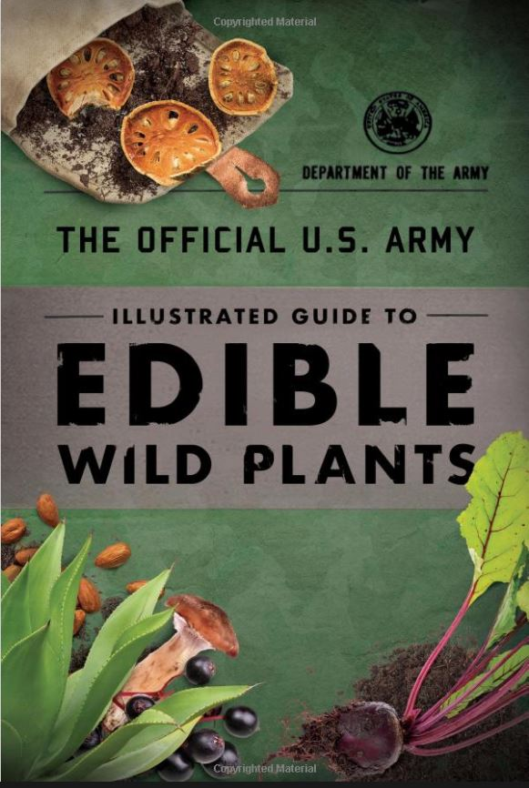

The Official U.S. Army - Illustrated Guide to Edible Wild Plants
In a survival situation, plants can provide food and medicine. Their safe usage requires absolutely positive identification, knowing how to prepare them for eating, and knowing any dangerous properties they might have. Familiarity with botanical structures of plants and information on where they grow will make them easier to locate and identify. -U.S. Army
Author: Department of the Army (A federal agency)
Interesting Excerpts
To avoid potentially poisonous plants, stay away from any wild or unknown plants that have -
- Milky or discolored sap.
- Beans, bulbs, or seeds inside pods.
- Bitter or soapy taste.
- Spines, fine hairs, or thorns.
- Dill, carrot, parsnip, or parsley-like foliage.
- "Almond" scent in woody parts and leaves.
- Grain heads with pink, purplish, or black spurs.
- Three-leaved growth pattern.
Examples of testing a plant with a wait time of 8 hours between any touch or taste test:
- Smell the plant for strong or acid odors.
- Touch test the plant on skin to check for reaction and wait.
- Touch test the plant on outer surface of lip to check for reaction and wait.
- Test on tongue and wait.
- Chew a small portion without swallowing and wait.
- Swallow small portion and wait.
- Swallow no more than 1/4 cup of the plant and wait.

Reviews
"This is very educational. It's great for any survivalist, prepper, or avid outdoorsman." - Samuel Kostiew
"Very educational for beginners and easy to comprehend. This is a wonderful buy and my children are learning about so many new plants in our area!" - Kasey Fisher